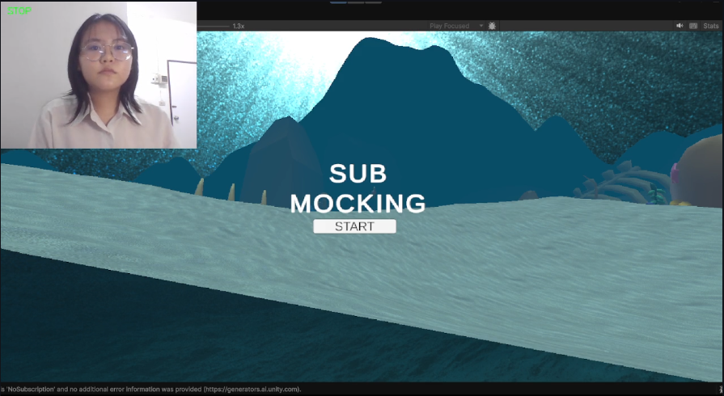
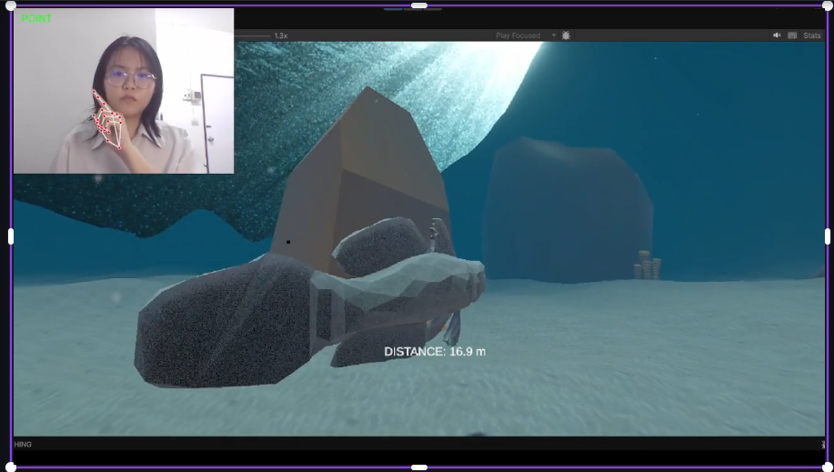
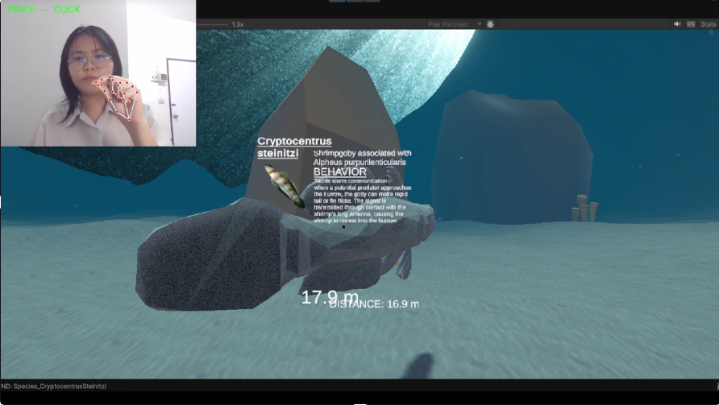

ประสบการณ์เชิงโต้ตอบ · UNITY · MEDIAPIPE
Handtracking Simulation VR
แนวคิดเกมสำรวจมุมมองบุคคลที่หนึ่งที่ควบคุมด้วยท่าทางมือ เชื่อมต่อคอมพิวเตอร์วิทัศน์ใน Python กับการเล่นเกมใน Unity ผ่านข้อความ UDP



เป้าหมายโครงงาน
สร้างระบบโต้ตอบโดยไม่ต้องใช้มือจับอุปกรณ์ ผู้เล่นสามารถเคลื่อนที่ ชี้วัตถุ ดูข้อมูล และสแกนวัตถุที่เลือกในสภาพแวดล้อมสามมิติ
เครื่องมือและเทคโนโลยี
- Unity 6
- Python, OpenCV and MediaPipe
- UDP communication
- C# scripts and Unity UI
การควบคุมด้วยท่าทาง
🖐🏻หันซ้าย/ขวา
ใช้ท่ามือแบเพื่อหันซ้ายหรือขวา
👐🏻เดินหน้า
แบมือทั้งสองข้างเพื่อเดินหน้า
☝🏻ชี้ / คลิก
ชี้เพื่อโต้ตอบกับวัตถุบนหน้าจอ
✊🏻หยุด
กำมือเพื่อไม่ส่งคำสั่งเคลื่อนที่
คุณสมบัติการโต้ตอบที่วางแผนไว้
- ชี้ไปยังวัตถุที่โต้ตอบได้เพื่อเปิดหน้าต่างข้อมูล
- ใช้ปุ่มบนแป้นพิมพ์เพื่อสแกนและเน้นวัตถุด้วยเงาเรืองแสง
- แสดงระยะห่างจากวัตถุที่สแกน เช่น “100 m”
- แยกการตรวจจับมือใน Python ออกจากการรับคำสั่งใน Unity เพื่อให้ง่ายต่อการแก้ไขข้อผิดพลาด
หน้านี้อธิบายขอบเขตและแนวทางการพัฒนาโครงงาน ไม่ได้ระบุว่าคุณสมบัติที่วางแผนไว้ทั้งหมดเสร็จสมบูรณ์แล้ว